15th International Natural Language Generation Conference
Home
Calls
Organizers
Program
Keynotes
Panel
Papers
Workshops
Tutorials
Hackathon
GenChal
Schedule
Sponsors
Registration
Help
15th International Natural Language Generation Conference
18-22 July 2022
Papers
'Slow Service' $\Cancel{\Rightarrow}$ 'Great Food': Enhancing Content Preservation In Unsupervised Text Style Transfer
A Multi-Task Learning Approach For Summarization Of Dialogues
A Reproduction Study Of Methods For Evaluating Dialogue System Output: Replicating Santhanam And Shaikh (2019)
Amortized Noisy Channel Neural Machine Translation
Analogy Generation By Prompting Large Language Models: A Case Study Of Instructgpt
Arabic Image Captioning Using Pre-Training Of Deep Bidirectional Transformers
Are Current Decoding Strategies Capable Of Facing The Challenges Of Visual Dialogue?
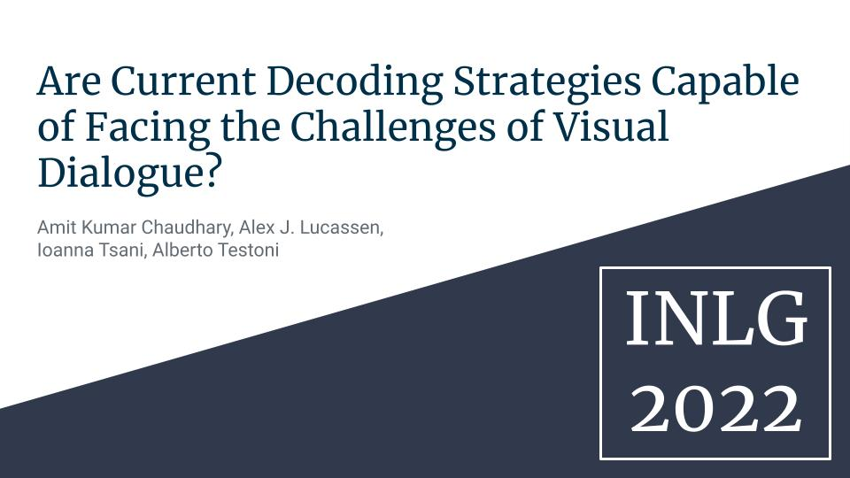
Automated Ad Creative Generation
Automatic Generation Of Factual News Headlines In Finnish
Bits Pilani At Hinglisheval: Quality Evaluation For Code-Mixed Hinglish Text Using Transformers
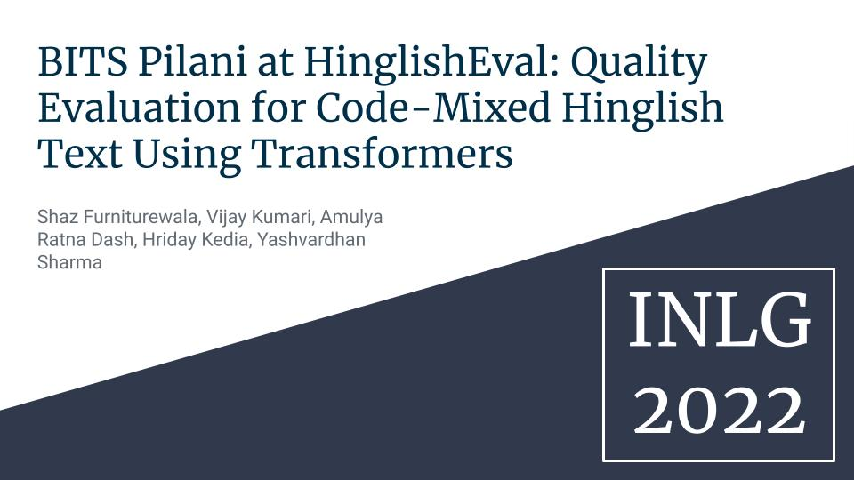
Blab Reporter: Automated Journalism Covering The Blue Amazon
Comparing Informativeness Of An Nlg Chatbot Vs Graphical App In Diet-Information Domain
Dealing With Hallucination And Omission In Neural Natural Language Generation: A Use Case On Meteorology.
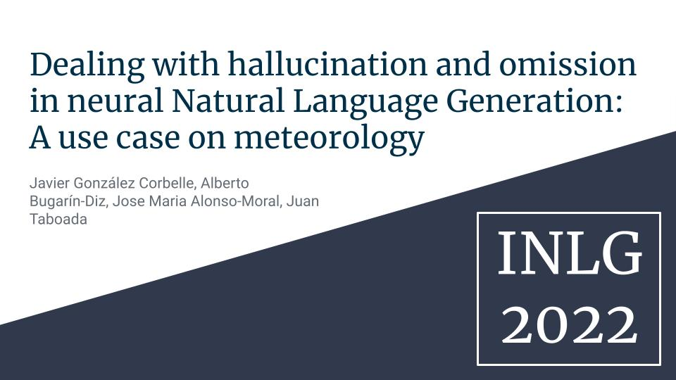
Dialogsum Challenge: Results Of The Dialogue Summarization Shared Task
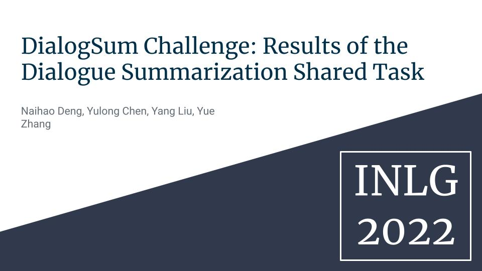
Dialogue Summarization Using Bart
Evaluating Legal Accuracy Of Neural Generators On The Generation Of Criminal Court Dockets Description
Evaluating Referring Form Selection Models In Partially-Known Environments
Generating Coherent And Informative Descriptions For Groups Of Visual Objects And Categories: A Simple Decoding Approach
Generating Landmark-Based Manipulation Instructions From Image Pairs
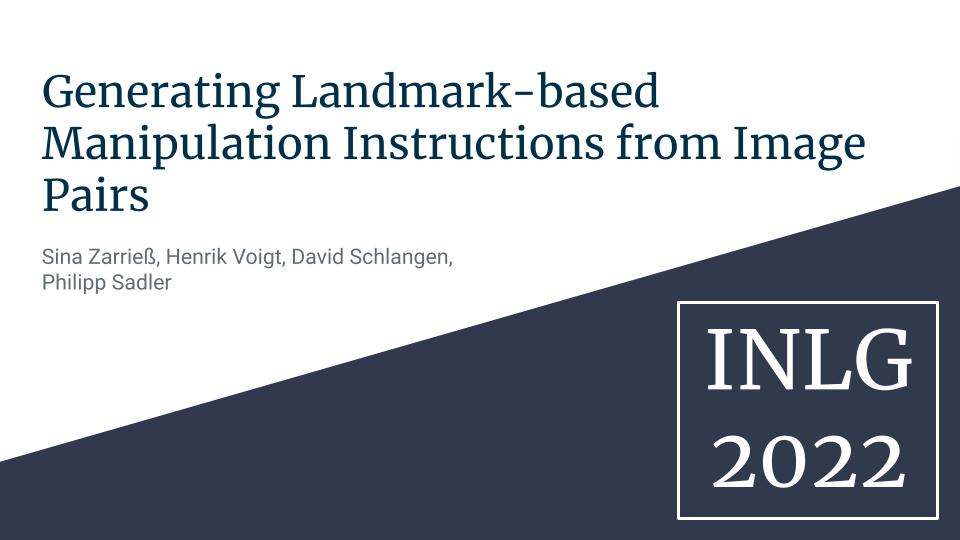
Generating Quizzes To Support Training On Quality Management And Assurance In Space Science And Engineering
Generation Of Student Questions For Inquiry-Based Learning
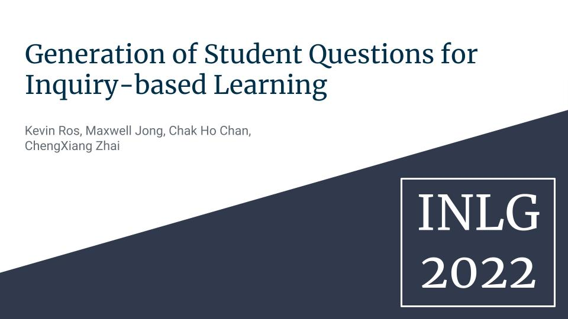
Hinglisheval Generation Challenge On Quality Estimation Of Synthetic Code-Mixed Text: Overview And Results
Ju_Nlp At Hinglisheval: Quality Evaluation Of The Low-Resource Code-Mixed Hinglish Text
Keyword Provision Question Generation For Facilitating Educational Reading Comprehension Preparation
Laft: Cross-Lingual Transfer For Text Generation By Language-Agnostic Finetuning
Look And Answer The Question: On The Role Of Vision In Embodied Question Answering
Math Word Problem Generation With Multilingual Language Models
Niksss At Hinglisheval: Language-Agnostic Bert-Based Contextual Embeddings With Catboost For Quality Evaluation Of The Low-Resource Synthetically Generated Code-Mixed Hinglish Text
Nominal Metaphor Generation With Multitask Learning
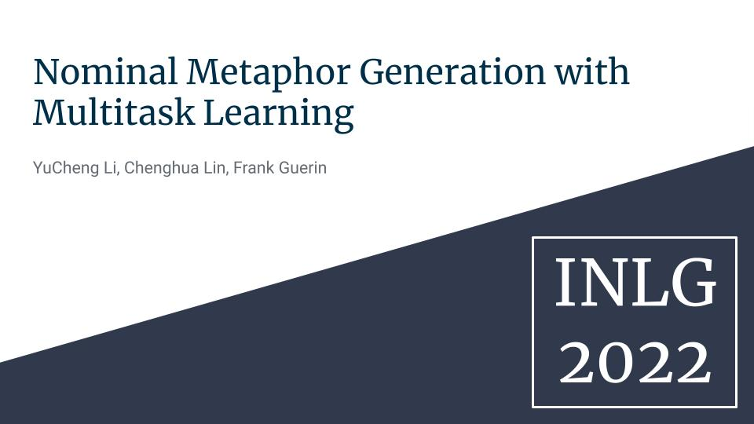
Paraphrasing Via Ranking Many Candidates
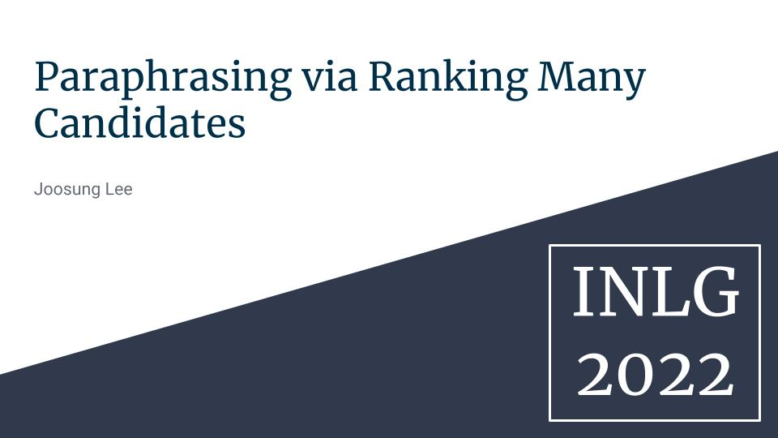
Plot Writing From Pre-Trained Language Models
Precogiiith At Hinglisheval: Leveraging Code-Mixing Metrics & Language Model Embeddings To Estimate Code-Mix Quality
Quantum Natural Language Generation On Near-Term Devices
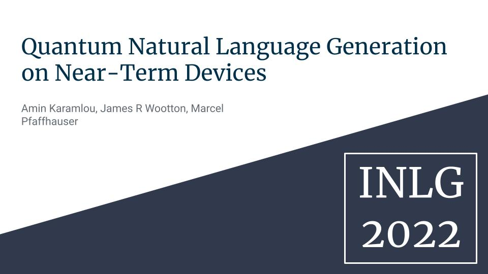
Reproducibility Of Exploring Neural Text Simplification Models: A Review
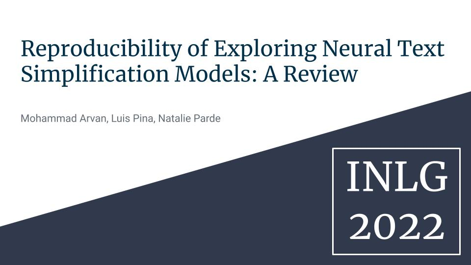
Reproducing A Manual Evaluation Of The Simplicity Of Text Simplification System Outputs
Strategies For Framing Argumentative Conclusion Generation
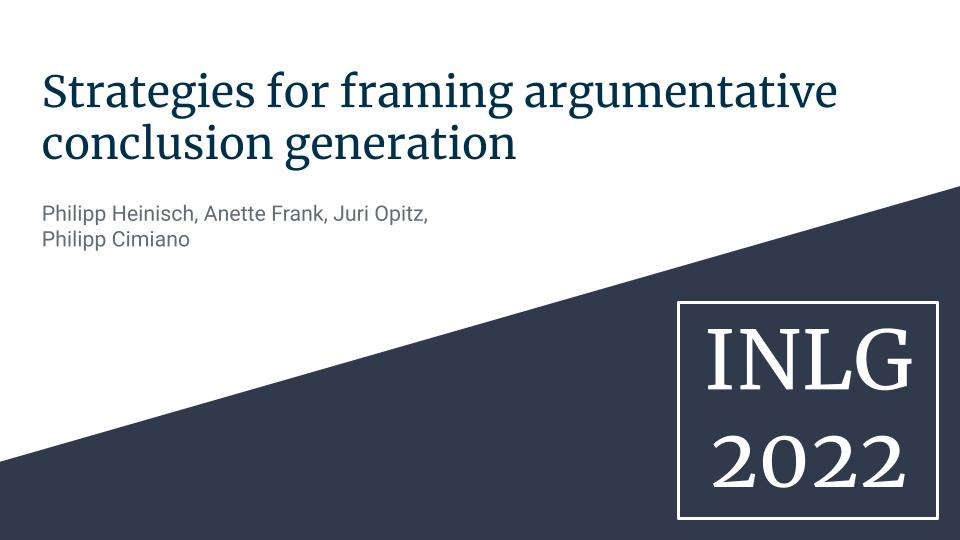
Tcs_Witm_2022 @ Dialogsum: Topic Oriented Summarization Using Transformer Based Encoder Decoder Model
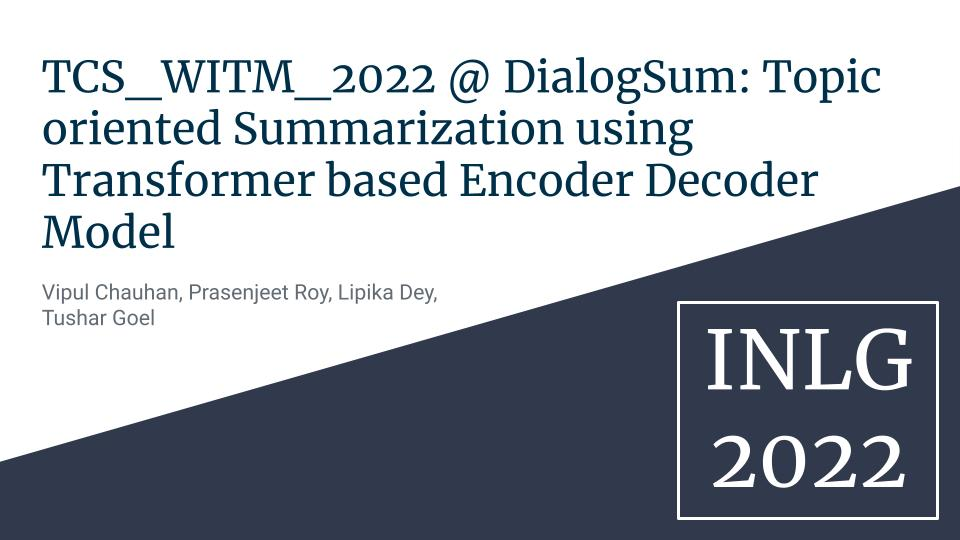
Template-Based Approach To Zero-Shot Intent Recognition
The 2022 Reprogen Shared Task On Reproducibility Of Evaluations In Nlg: Overview And Results
The Accuracy Evaluation Shared Task As A Retrospective Reproduction Study
The Cross-Lingual Conversation Summarization Challenge
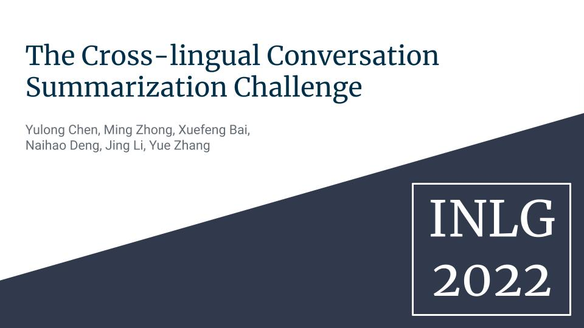
The Second Automatic Minuting (Automin) Challenge: Generating And Evaluating Minutes From Multi-Party Meetings
Theaitrobot: An Interactive Tool For Generating Theatre Play Scripts
Towards Evaluation Of Multi-Party Dialogue Systems
Two Reproductions Of A Human-Assessed Comparative Evaluation Of A Semantic Error Detection System
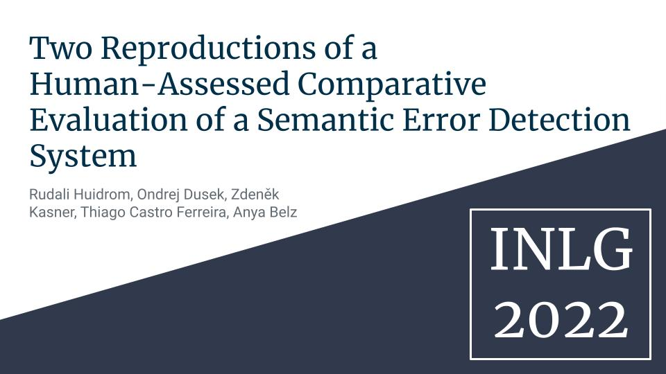
Zero-Shot Cross-Linguistic Learning Of Event Semantics